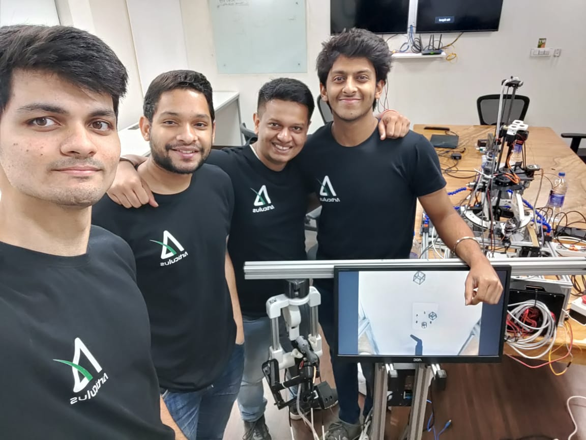

Robotics Systems Engineer Articulus Surgical, 2021 - 2023
Bengaluru, India
I joined Articulus Surgical at its inception as a founding team member
and one of its first contributors. The vision for an indigenous
sustainable and accessible RAS system that caters to the need to bring
the advancements in medical technology to the people who cant yet
afford it, is what served as a northern star for us.
Articulus is a team of young high-aiming engineers from diverse
backgrounds, founded by Mr. Saurya Mishra a post-grad from IIT
Kharagpur with over 12 years of experience in medical devices in
companies like Phillips Healthcare.
Pulsar Robot Assisted Laparoscopy
I started my journey at Articulus as a mechatronics engineer in
November 2021 where I was tasked with ideating and subsequently
developing the mechanisms for the 6DOF remote centre robot, which was
based on a circular carriage-driver gantry.
Thereafter, I owned the end-to-end design and development of the
surgeon’s console. This involved designing the joints and structure of
a 7DOF serial manipulator. Since we opted for a console with passive
joints, gravity compensation using counterbalance initially and later
springs, was a challenge. The mechanism that i designed was reviewed
as “as smooth as a motor-driver mechanism” by a few doctors and
investors. Apart from mechanical design, i was responsible for the
Industrial design and user experience for all the projects in R&D.
Since the team was small, I also developed the firmware on an ESP32
using the ESP-IDF framework to read the joint absolute encoders and
convert them to joint angles. The data stream was then transmitted to
a computer using RS232, where it was input into a forward kinematics
model to get the end-effector parameters.
Later on, I got a hands-on introduction to PID controller design and
tuning for DC motors. This was implemented on an RP2040 MCU using the
PICO-SDK framework and deployed on the robot joint actuators
Comet Handheld Motorised Laparoscopic
As a spin-off project, I was tasked with the design of a handheld
motorised laparoscopic instrument to control a 3DOF instrument
end-effector. The concept for the capstan mechanism was borrowed from
the Pulsar Instrument. The movement of the surgeon’s arm was encoded
using a 3DOF gimbal to translate each of the X Y and Z axis rotations
to joint angles.

Pulsar Robotic Surgery System →
Comet Handheld Robotic Instrument →